- 00000018WIA30197E20GYZ
- id_131057924.2
- May 8, 2025 3:02:10 AM
Grafidy 3 Troubleshooting
Introduction
- Coil position.
- Relative signal intensities of the initial points in the magnitude signal as a function of time.
- SNR of the resulting magnetic field data.
If any of these characteristics are found to be incorrect, an error is presented to the user and written to the error log.
Using the Manual Prescan Page
When troubleshooting the Grafidy tool, it is often useful to observe the signals in the Manual Prescan page. Changing from Service View to Scan View allows access to the Manual Prescan page. Assuming that the Grafidy software is running and a scan has been completed, the proper protocol will be loaded. In order for the Manual Prescan window to display the signals correctly, perform the following steps:
- Right-click on the [Research Options] button at the bottom of the screen. A list of options will be presented.
- Select Setup Params. A popup window will be presented.
Figure 1. Setup Parameters Window 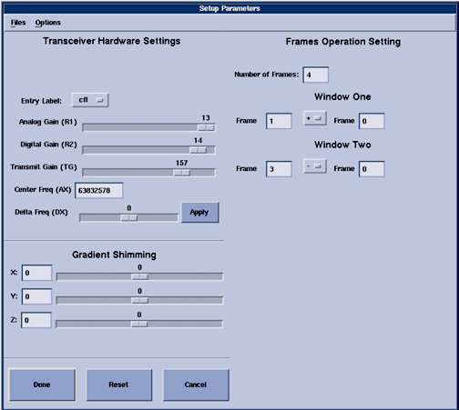
- Edit the following values in the text boxes provided in the upper right corner of the window.
- Number of frames: 4.
- Window one: Frame: 1 Frame: 0.
- Window two: Frame: 3 Frame: 0.
- Select the Done button to dismiss the window.
Selecting the [Manual Prescan] button in the Scan View will bring up the Manual Prescan window and begin data collection and display in CFL (Center Frequency Coarse) mode. The "Rec" slider bar determines which channel is displayed in the data window. Data from all six channels may be viewed one at a time.
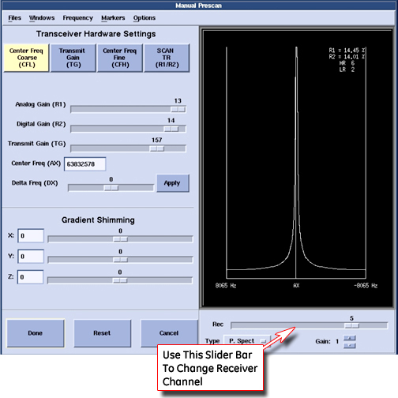
Field Replaceable Units (FRU)
Only a few failure modes may be addressed in the field. Only one subcomponent of the Grafidy fixture are designated as field replaceable units (FRU). This is the RF coil assembly, which includes the RF coil, sample, RF tune board and the plastic shell. The fixture design accommodates easy exchange of these assemblies.
| Notice | |
|---|---|
Troubleshooting
No Signal from any Channel
There can be several causes of no signal from any channel. Below is a list of recommended steps to take.
An example of the message that may appear is shown in screen-shot below.
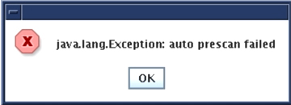
- Verify that the display configuration in the Manual Prescan page (Setup Params) is correct.
- Verify that the fixture is plugged into the 'A' connector on the LPCA and that the green coil ID light is on.
- Verify that all pins in the Hypertronics connector are straight (not bent).
- Run the MCR tool to verify proper operation of the receive chain.
- If possible, plug another coil into the 'A' port (a Tx/Rx coil such as the 8-channel knee coil is preferred) to verify proper operation of the transmit chain and 'A' connector in the LPCA.
- Return the fixture for repair.
No Signal/Low Signal from a Single Channel
There can be several causes of no signal from a single channel. Below is a list of recommended steps to take. The screen-shot below gives an example of the message that may appear.
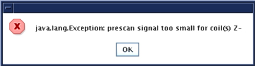
- Run the MCR tool to verify proper operation of the receive chain.
- Exchange RF coil assemblies with another in the fixture or a FRU and repeat the data collection. Note that Channel 1=+X, 2=-X, 3=+Y, 4=-Y, 5=+Z, 6=-Z.
- If possible, plug another coil into the 'A' port to verify proper operation of the 'A' connector in the LPCA.
- Return the fixture for repair.
Error Setting The TG Value
There can be several causes that produce errors when setting the TG value. Below is a list of recommended steps to take.
- Verify that the fixture is plugged into the 'A' connector on the LPCA and that the green coil ID light is on.
- Run Auto Prescan from the Manual Prescan page. Verify that the error still occurs or the TG value is set to 190 (indicating the 90 degree flip was not achieved).
Figure 5. TG Going Too High 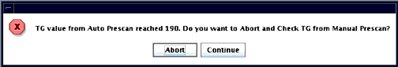
- If possible, plug another coil into the 'A' port (a Tx/Rx coil such as the 8-channel knee coil is preferred) to verify proper operation of the transmit chain and 'A' connector in the LPCA.
- Reboot the software to verify that the scan configuration is correct (CVs in the pulse sequence, prescan configuration, etc.)
- Return the fixture for repair.
Large Peak-to-Peak Variation in Initial Magnitudes
The Grafidy tool has been designed such that the shortest time between RF pulses is long enough to allow sufficient time for the sample spins to relax. If an error message is presented that states that the peak-to-peak variation in initial magnitudes is too large, repeat the experiment to verify the result. If it occurs again, replace the RF coil assembly.
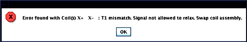
Noise Too Large in the Field Data
The Grafidy tool has been designed such that the data acquisition length, receiver bandwidth and sample size provides sufficient SNR. If an error message is presented that states that the field data is too noisy, first verify that prescan ran correctly. Then, repeat the experiment to verify the result. If it occurs again, replace the RF coil assembly that the tool reported as bad.
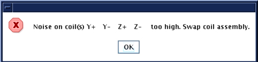

S5 Magnet VLong Calibration is Out of Tolerance
- Problem
- For an S5 magnet, Grafidy3 achieves calibration, but when it is re-run later, VLong is out of tolerance. The cause may be insufficient time delay between iterations (scans), preventing eddy current from settling.
- Solution
- Calibrate very long (VLong) eddy current in manual mode. Stay in one axis (e.g., vlong X axis) until it is done (this may take a few iterations) before moving to the next axis. Between iterations (scans), wait a few minutes (~2 minutes) before clicking Scan again. When the scan finishes and the popup comes up for the last scan, click Cancel instead of Accept.
Fixture Out of Position
Overview
If any of the samples are greater than 1.5cm from their ideal location in the bore, an error will be presented along with the measured X, Y and Z coordinates of the coil pair. For example, the +Y (upper) coil has an ideal location of (0, 10, 0). The actions depend on the direction of the error. Note that for the LCC magnet, when facing the bore at the patient end of the magnet, +X is left, +Y is up, and +Z is toward the LPCA.
X Axis (Left-Right)
If the fixture is off along the X-axis, first verify if the right-left laser alignment light lies along the center (sagittal) plate. If not, adjust the fixture so that it does. If it does, verify that the laser alignment light is properly configured. If it is not, adjust it and repeat the landmark on the fixture. If it is, as a last resort slide the fixture left or right the approximate distance that the tool reported that the coil was off along the X axis. An example is shown in screen-shots below.

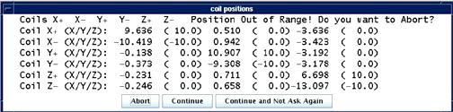
Y Axis (Up-Down)
If there are failures with the Y-axis, this implies that either the Grafidy fixture is not properly placed on the cradle, or the bridge height is incorrect. Verify that the fixture is properly set on the cradle per the Grafidy set-up. The bridge height should not need adjusting, as it is set at the factory. If the bridge height cannot be adjusted and the fixture is still too low and the error shown in the screen-shots below are seen, prop the fixture on a secure riser. There is not an adjustment provided to lower the position of the fixture along the Y-axis.
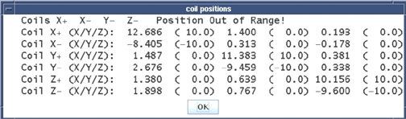
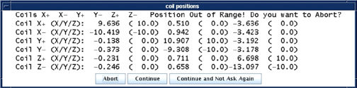
Z Axis (In-Out)
If the fixture is off along the Z-axis, first verify if the back-front laser alignment light lies along the wing (axial) plates. If not, move the fixture so that it does. If it does, verify that the laser alignment light and the Z-isocenter calibration are properly configured. If it is not, adjust it and repeat the landmark on the fixture. If it is, as a last resort slide the fixture in or out of the bore the approximate distance that the tool reported that the coil was off along the Z-axis. An example of this is shown in screen-shots below.
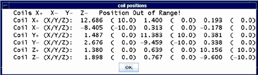